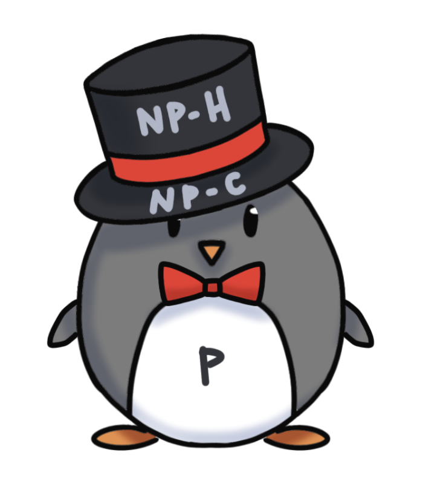

Hi! I'm Paris Zhang. I'm a junior student studying Compuster Science and Economic @ UC Berkeley.
Welcome to my page! Scroll down to see some of my work.
Redex for TikTok
Software Engineer Intern
I optimized 1.4MB Android Package size and 2% cold startup time for Tiktok, by developing optimization passes based on a Facebook open-source Android bytecode optimizer Redex.
Network & Recommendation
Undergrad Researcher
Quantifying impacts of recommendation algorithms on the growth and evolution of social networks and their structural properties with Ph.D. student Mihaela Curmei.
Distance Maximizing Algorithm

Project Member
In a group of 3, designed and implemented a graph algorithm that, after choosing to remove a given number of edges and nodes, maximizes the distance between the source and destination nodes.